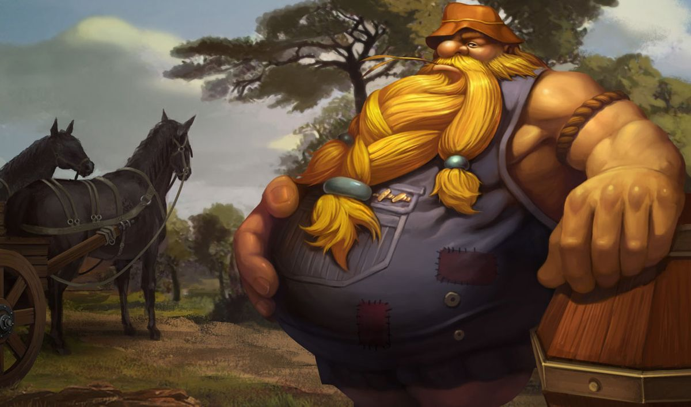

GRAGAS
Para Gragas, a única coisa mais importante do que lutar é beber. Sua sede insaciável por fermentações mais fortes o levou a buscar os ingredientes mais potentes e inconvencionais para jogar em seu alambique. Impulsivo e imprevisível, esse beberrão badernista adora abrir, na mesma medida, barris e cabeças. Graças à suas misturas estranhas e natureza temperamental, beber com Gragas sempre é uma proposta arriscada.
Ele tem um amor eterno por uma boa bebida, mas sua constituição massiva o impede de chegar a um estado divino de intoxicação. Certa noite, quando ele havia drenado todos os barris e ficou querendo mais, Gragas foi pego de surpresa por uma ideia — em vez de um banco de bar, como de costume: por que é que ele não conseguia fazer uma bebida que o deixaria bêbado de verdade e de uma vez por todas? Foi quando ele fez o voto de criar a fermentação perfeita.
missão de Gragas eventualmente lhe conduziu a Freljord, onde a promessa de conseguir a água mais pura do ártico para sua receita o levou até destroços glaciais nunca antes explorados. Enquanto estava perdido em uma nevasca impiedosa, ele encontrou um gigantesco abismo silvante. E lá ele encontrou: um estilhaço de gelo perfeito, diferente de tudo o que ele já havia visto. Não bastasse esse estilhaço que não derretia adicionar propriedades incríveis à sua ceva, ela também tinha um efeito colateral útil - mantinha a mistura refrescada na temperatura perfeita para servir.
Sob o efeito de sua nova mistura, Gragas seguiu em direção à civilização, ansioso para compartilhar os frutos fermentados de seu trabalho. Assim como desejava o destino, a primeira aglomeração a chamar Gragas pelos olhos daria forma ao futuro de Freljord. Ele se enfiou em uma negociação que não ia nada bem entre duas tribos discutindo uma aliança com Ashe. Embora ela tenha agradecido por uma interrupção na tensão, os outros guerreiros, reclamaram da intrusão e gritaram insultos ao beberrão espaçoso. Seguindo sua natureza à risca, Gragas respondeu com uma cabeçada diplomática, dando início a uma briga equivalente somente às lendas de Freljord.
Quando os derrotados pela bela briga finalmente despertaram, Ashe propôs um drinque como alternativa à luta. Entre uns e outros goles, os ânimos se acalmaram e as duas tribos, outrora prestes à travar guerra, se uniram graças ao amor comum pela bebida de Gragas. Embora a briga tenha sido evitada e Gragas clamado como herói, ele ainda não havia conquistado seu sonho de bênção inebriante. Portanto, mais uma vez, ele partiu errante pela tundra em busca de ingredientes para o caneco perfeito de Runeterra.